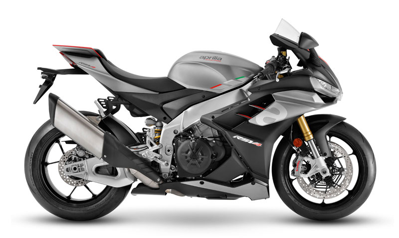
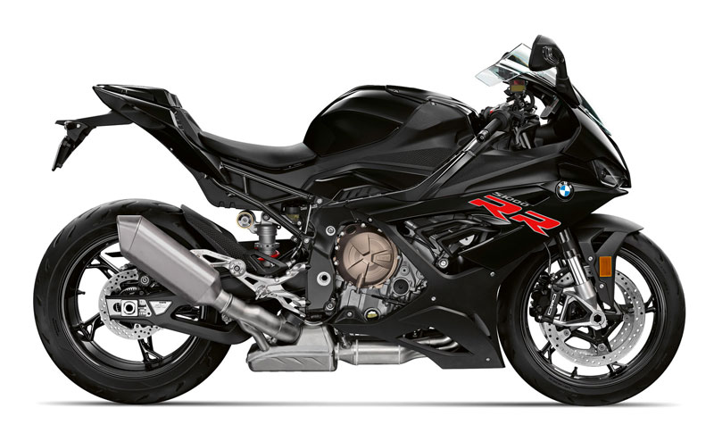
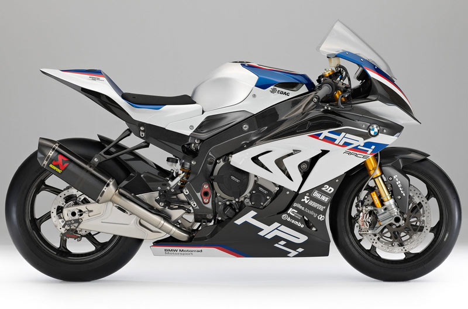
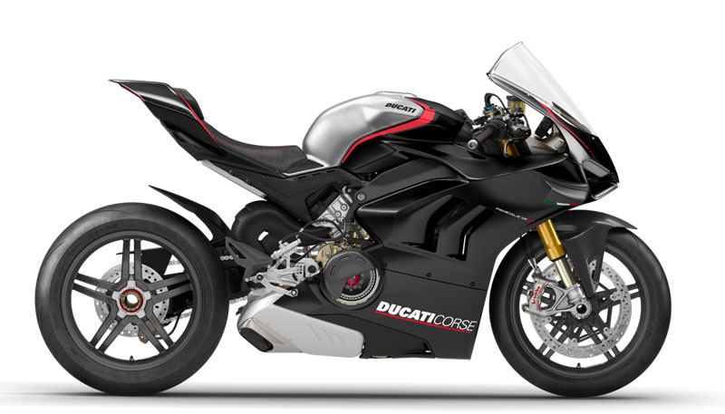
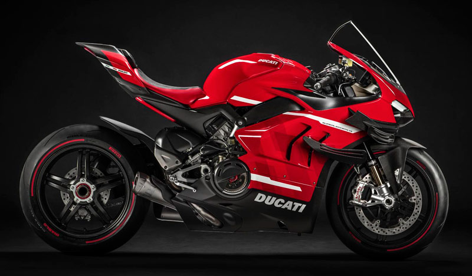
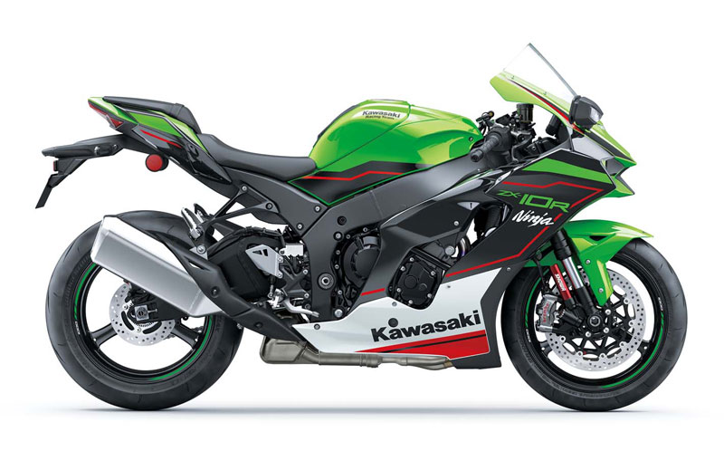

La RSV4 fue una de las primeras deportivas en incorporar electrónica de última generación, el denominado sistema APRC que incluye un control de tracción con ocho modos. En 2021 se ha renovado por completo con un motor mucho más potente y con la inclusión de los alerones aerodinámicos. Es una moto enfocada al circuito, como lo demuestra el contar de serie con el sistema Quick Shift, el Anti Wheelie, el Launch Control y el limitador de velocidad para el pit lane. El ABS funciona en curva, lo mismo que el control de tracción sobre la rueda trasera para que ésta no pierda el contacto en las frenadas. Utiliza componentes Sachs tanto en la horquilla como en el amortiguador trasero
BMW mantiene su apuesta en el segmento de las superbike con su S 1000 RR con motor de distribución variable el cual rinde una potencia de 207 CV y que brilla por su entrega lineal a bajo y medio régimen. El apartado electrónico es otro de sus puntos fundamentales pues incorpora de serie el control de tracción, antiwheelie, freno motor ajustable, ABS en curva, quickshift... Las suspensiones son semiactivas. En el apartado estético lo más reseñable es el faro delanteron con doble óptica full-LED -ya no es asimétrico como en las primeras versiones-. Como es habitual en BMW, el usuario puede ampliar su equipamiento con numerosas opciones y con paquetes especiales, como el M, que incluye una serie de piezas especiales.
Es una versión limitada a 750 unidades que brilla por su chasis realizado íntegramente en fibra de carbono, al igual que sus llantas. El empleo de este material garantiza un peso muy reducido, de sólo 171 kg. La parte ciclo se completa con unas suspensiones Öhlins y con unos frenos Brembo, todo ello como los que se utilizan en el Mundial de Superbike. El motor es como el de la versión estándar, pero su potencia se ha visto incrementada hasta alcanzar los 215 CV, mientras que el cambio está invertido para su mejor uso en circuito. La electrónica es regulable, tanto desde la misma moto como desde el box.
La Panigale V4 se desdobla en tres versiones: estándar, S y SP, que se diferencian en el equipamiento. Comparten un motor de 1.103 cc tecnológicamente muy avanzado pues hereda gran parte de los componentes utilizados en las monturas de MotoGP. La competición ha servido igualmente para desarrollar la electrónica, no faltando en la Panigale ninguno de los elementos propios de estas motos. En la parte ciclo, Ducati ha optado por un chasis monocasco con el motor como elemento portante. Las suspensiones marcan la diferencia entre las versiones, con horquilla Showa y amortiguador Sachs en la básica; y suspensiones Öhlins, en la S y SP. La SP, disfruta de reducción en el peso gracias a la fibra de carbono en numerosos elementos.
No hay una deportiva de 1000 igual a esta, tanto en concepto como en estética. Es una auténtica moto de carreras homologada para circular por la calle de la que sólo se han fabricado 500 unidades. Es la única moto de serie con el chasis, basculante y llantas fabricados en fibra de carbono, material que también se emplea en el carenado. Su motor deriva del de la Panigale V4 R, con 221 CV que con el escape Akrapovic para circuito alcanza los 234 CV. Su cilindrada es de 998 cc siendo además un motor bastante ligero, casi 3 kg menos que el de la Panigale V4. La instrumentación es similar a la de la moto oficial de MotoGP, de la que también hereda los alerones -iguales que los de la Desmosedici de 2016-.
La Kawasaki es la principal referencia dentro de las superbike gracias a los éxitos deportivos cosechados en los últimos años. En 2021 recibe nuevas modificaciones, que afectan al motor y a la aerodinámica -alerones integrados en la carrocería-. Se mantienen las principales ayudas electrónicas, desarrolladas por Bosch, con ABS en curva y los controles de salida, tracción, freno motor..., todo ello desarrollado en competición, y se añade un nuevo modo de conducción para alcanzar los cuatro disponibles. Las suspensiones son Showa y los frenos Brembo. De manera opcional se pueden añadir distintos elementos, todos ellos pensando en su uso en circuito.
